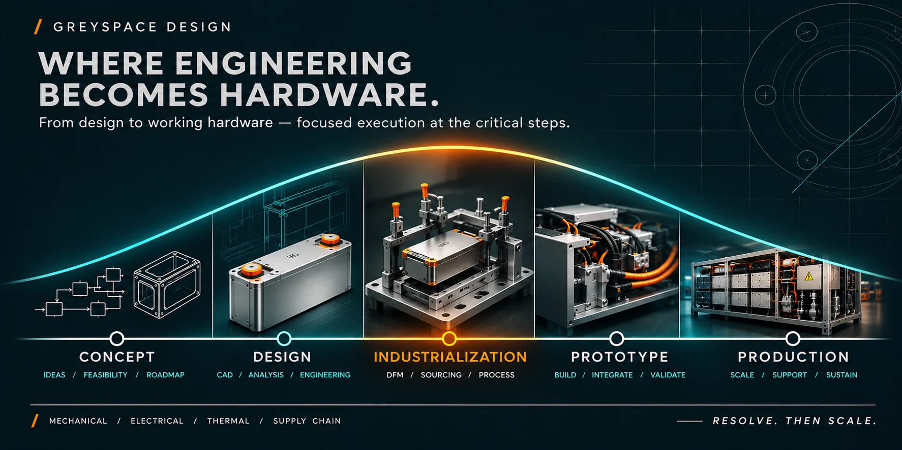

Systems & product engineering
Requirements, architecture, interfaces, mechanical and electrical design.
HARDWARE DEVELOPMENT · INDUSTRIALIZATION · NPI
Resolve, then scale.
GreySpace closes the engineering, supplier, build, and test gaps that stand between promising hardware and repeatable execution.
Talk to GreySpace ↗THE DEVELOPMENT CONTINUUM
We engage wherever the constraint lives, with particular depth in industrialization and prototype execution.

WHAT GETS RESOLVED
Requirements, architecture, interfaces, mechanical and electrical design.
DFM, sourcing, fixtures, work instructions, build methods, and supplier coordination.
Harnesses, physical integration, test infrastructure, acceptance, and failure resolution.
Buildable definitions and evidence another team can use to execute.
HOW WE ENGAGE
We take on the engineering and industrialization challenges standing between your hardware and its next milestone.
GreySpace typically works through bounded engineering work packages with agreed objectives, deliverables, responsibilities, and completion criteria. When the work calls for sustained cross-functional support, we can embed senior engineering capability alongside your team.
See how we work ↗You've already invested in the engineering. Let's make sure the next build moves you forward, not back.
Let's talk hardware ↗projects@greyspacedesign.com